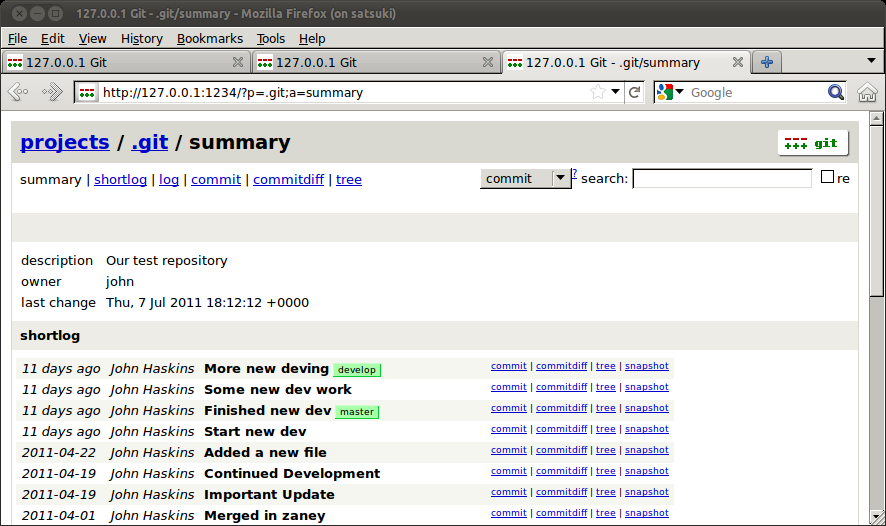
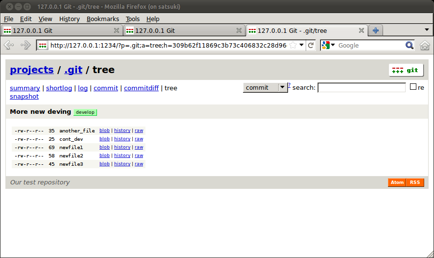

Week 7"Network Communicating"
The last week began by looking at some networking communication.
In the After Hours section this week, we are going to look at two tools which are used for network communication.
Brewing a website - in an instant
The Instaweb tool allows you to spawn a web service quickly and easily, using a web daemon of your choice.
The Instaweb tool actually uses gitweb which is a more permanent solution for obtaining the same functionality as Instaweb.
If you have never played with web services before it would be worth spending a few minutes understanding a little about how web daemons work.
This tool is not available on the Windows platform, but it can be used on both MacOS and Linux.
Instaweb allows us to browse our repository from the comfort of a web browser.
We also have another benefit to running this from a web server.
We can allow people to access our repository to look around without giving them the ability to change anything or make any commits.
Before we run git instaweb, we need to ensure that we have a web daemon available to us.
Instaweb automatically creates a configuration file for the web daemon of your choice, runs the daemon on a custom network port,
and loads a browser automatically pointing to the URL of the web instance you have just configured.
On our example machine, we have installed lighttpd as our choice of web daemon.
Once again it is advised to understand the implications of this before you do it.
On Ubuntu, this can be installed by running apt-get install lighttpd.
john@satsuki:~/coderepo$ git instaweb
john@satsuki:~/coderepo$
The tool is invoked by running git instaweb and when started, you should be presented with a browser as pictured below.
In our case, lighttpd has been installed, and so Git will use that as its daemon.
Firefox is also the default browser on this machine and so this is the browser that Git will choose to display the web page in.
If we wanted to use an alternative browser, we could have supplied an argument with --browser, like --browser chromium for example.
 |
|
Figure 1
Instaweb's default page |
|
The first thing to notice is that the description of the repository is unhelpful.
In Figure 1, it is shown as Unnamed repository; edit this....
It is easy to rectify this, by editing the .git/description file.
We are going to use the echo command from Linux, as we have throughout the book.
john@satsuki:~/coderepo$ echo "Our test repository" > .git/description
john@satsuki:~/coderepo$
On refreshing the page, the description will be updated.
The next thing to notice is the url.
The screenshot shows our url to be http://127.0.0.1:1234/, where 127.0.0.1 is the local address of our Git machine and 1234 is the port.
Before we start taking a look around the web interface, we should learn how to end the Instaweb session.
If we close the web browser, it does not end the Instaweb process.
In fact, we could load up firefox again, type in the URL http://127.0.0.1:1234/ and return to the home page of our Git repository.
To close the instance of Instaweb we run the following;
john@satsuki:~/coderepo$ git instaweb --stop
john@satsuki:~/coderepo$
Now would be a good time to take a quick look at what running git instaweb has done to our repository.
If we take a look inside the .git folder, we can see that there is a new folder called gitweb.
This folder contains configuration a log files for the Instaweb process.
The file we are most interested in is httpd.conf.
Looking at the beginning of this file we should see something similar to the following.
server.document-root = "/usr/share/gitweb"
server.port = 1234
server.modules = ( "mod_setenv", "mod_cgi" )
server.indexfiles = ( "gitweb.cgi" )
server.pid-file = "/home/john/coderepo/.git/pid"
server.errorlog = "/home/john/coderepo/.git/gitweb/lighttpd/error.log"
Here we can see the beginning of the config file that Git has created for using with lighttpd.
If we had other web daemons installed, such as apache, we could override the default of lighttpd by supplying the --httpd apache2.
Notice the port number which as been defined as 1234.
Let us run up git instaweb again and see what other features the web interface offers.
|  |
|
Figure 2
Instaweb's repository page (top) |
|
 |
|
Figure 3
Instaweb's repository page (bottom) |
|
Figures 2 and 3 show how the web interface looks when browsing our repository.
At the top of the page we see a history of commits along with a search box which works similar to the gitk system which was discussed earlier.
At the bottom of the page, we see our tags and heads.
There are several link names which we will briefly describe now.
- shortlog - Gives a log of the commits, similar to that shown in Figure 2.
- commit - Returns a page that gives details about a specific commit.
The commit page is shown in Figure 4.
- commitdiff - Shows how the chosen diff has changed since its parent.
This is similar to running our
git diff HEAD~1..HEAD command.
- tree - This page is a simple listing of the tree object which shows all files present in that particular commit.
- snapshot - Possibly one of the most useful links.
Clicking on this will initiate a download of the repositories filesystem at that particular point in time.
- log - Gives a listing of the full log messages.
Let us take a little look around the interface.
Choosing the first commit in the list on the homepage and clicking on the commit link moves on to the commit page.
Here we can see detailed information about the commit.
 |
|
Figure 4
Instaweb's default page |
|
The commit, tree and parent object hashes are displayed here fore reference.
The tree amd parent lines are clickable links which will take us to those relevant sections.
We are going to choose the tree link.
A screenshot of the resulting page is shown in Figure 5.
|  |
|
Figure 5
Instaweb's default page |
|
Going back and clicking on the snapshot link will initiate a download of the entire filesystem, at that point in the repository's life.
As shown in Figure 6.
 |
|
Figure 6
Instaweb's default page |
|
This has been a very brief tour around the gitweb system.
Hopefully you can see that this is a very useful tool to add to our Git suite.
If you are considering setting up a permanent web based view for your Git repository, you should not use Instaweb.
This tool is intended for quick and easy web access to a repository.
There are plenty of guides and tutorials available which explain the installation and configuration of gitweb.
Pushing and pulling with a daemon
The git instaweb daemon is very useful indeed.
However, one function that it does not provide is the ability to clone or fetch from the URL.
Another tool which comes with the Git package is the git daemon utility and it is this tool which is going to give us this functionality.
We spoke earlier about the GIT protocol and it just so happens that git daemon uses the GIT protocol for transferring data.
Let us have a look at a simple example of using git daemon.
john@satsuki:~$ git daemon --base-path=/home/john/coderepo
Notice how this command has not exited.
This is because the process is still running, waiting for communication.
We can now log into another machine on the same network and clone the repository using our git clone command.
We will supply the host name of the machine that we configured with git daemon, and a directory for us to clone into.
Notice the presence of git:// instead of ssh:// as we used in our previous network cloning example.
rob@mimi:~$ cd /tmp
rob@mimi:/tmp$ mkdir source
rob@mimi:/tmp$ git clone git://satsuki/ source
Cloning into source...
fatal: The remote end hung up unexpectedly
rob@mimi:/tmp$
That did not go as expected and resulted in a failed clone.
If we look back at the source machine we can see something interesteing has appeared.
john@satsuki:~$ git daemon --base-path=/home/john/coderepo
[4687] '/home/john/coderepo/.git': repository not exported.
john@satsuki:~$
This is probably one of the most common of all errors when dealing with git daemon.
By default, Git tries to protect your repositories and will not allow them to be exported unless you explicitly tell it to.
We have two ways of doing this.
We can append the --export-all parameter to git daemon, which will allow exporting of all repositories which are under the path described in --base-path.
The second method is to explicitly tell Git on a repository by repository, that we would like for it to be exported, or more accurately that we would like to opportunity to export it.
We are going to do the latter of the two and we do this by creating a special file in the .git directory, called git-daemon-export-ok.
To add this file, we are going to need to stop the daemon by pressing the ctrl+c key combination.
Then we ran run the commands as shown below.
john@satsuki:~$ touch coderepo/.git/git-daemon-export-ok
john@satsuki:~$ git daemon --base-path=/home/john/coderepo
Now we can go back to our second machine again and try to clone the repository as before.
rob@mimi:/tmp$ git clone git://satsuki/ source
Cloning into source...
remote: Counting objects: 71, done.
remote: Compressing objects: 100remote: Total 71 (delta 16), reused 0 (delta 0)
Receiving objects: 100Resolving deltas: 100rob@mimi:/tmp$
Et voila! Our repository has been cloned.
As we exported the root of our repository using the --base-path parameter, we do not need to specify to the clone command which repository we are trying to clone.
If you remember we did have some other repositories in the home folder and if we had exported /home/john/, instead of /home/john/coderepo,
then we could have chosen any of the repositories that lay in the home folder by appending their names to the URL.
An example of this would be git://satsuki/coderepo/ or git://satsuki/coderepo-cl/.
By default the git daemon tool only allows people to fetch objects from the repository.
This is quite sensible because as you can see there is no authentication present with the GIT protocol at all.
You can enable pushing of objects to your repository using the GIT protocol, but this is only advised within a well trusted LAN environment.
Otherwise you are giving whoever else is on your network the capability to push whatever they want into your repository, which as you can understand is not a good idea.
We can run the daemon tool in the background by supplying the --detach parameter.
However if you are unfamiliar to the Linux world, this requires some knowledge to stop the daemon again.
Running the daemon detached will result in your shell returning to the prompt, seemingly not have executed anything.
In fact the process has been moved to the background and no longer supports shell interaction.
The benefit of this is that you do not have to keep a shell window open to run it in.
The downside is that you can no longer end the process with the ctrl+c key combination.
You can hopefully see that by using the git daemon tool, it is possible for us to allow other people on our network to have access to our repositories.
Whilst the git daemon tool is very useful, it does have its disadvantages as stated, primarily in areas of version control.
However, seeing how efficient the GIT protocol is compared to its other counterparts, it often makes a fantastic device for making a repoitory available to pull from.
There are much more complicated configurations that can be performed with the daemon tool, but these are out of the scope of this chapter.
The manual page for git daemon has some examples to get you started,
and even goes into the areas of virtual hosting to allow multiple Git sites to exist on one server. |
|